SYSTEM DESIGN / CUSTOMIZING AGENTS AND RUNTIME
PROJECT GITHUB REPOSITORYCodex supplies the base runtime. This workspace adds an operating layer: instructions set boundaries, skills supply focused procedures, utilities support execution, and task records preserve the evidence needed to resume work.
The aim is straightforward: give a request the right context, do the work within its scope, verify the result, and remember only what will help next time. Current files and evidence remain authoritative. The AWS semantic-memory design below is a proposed extension, not an installed capability.
Give every request the right path
Start by identifying the project, desired outcome and risk. Load the applicable instructions and just enough prior context to understand the request. A quick question can get a direct answer; interdependent changes need a reviewed plan.


Each kind of guidance has a different job
- AGENTS.md sets the contract: ownership, permissions, scope and verification expectations. Project instructions refine the workspace rules.
- Skills supply the method: Python development, UI testing or a dedicated Glue delivery procedure. Load the relevant skill rather than every available document.
- Workflows connect the stages: discovery, planning, implementation, browser verification and checkpoint/resume.
- Task records track this piece of work:
plan.mddefines the outcome and acceptance criteria;summary.mdrecords evidence, blockers and the next step. Routine questions do not automatically need a task record.
Memory helps locate earlier decisions during this preparation step. It does not override present instructions or replace checking the current repository.
Give the work the structure it needs


For a small, clear ask, inspect what is needed and answer or make the change directly. For complex work, agree on the outcome, split it into reviewable tasks, implement and check each result. A material change in scope goes back to planning.
The main conversation owns integration and the final outcome. Specialists can take bounded tasks with explicit file ownership and acceptance criteria. Parallel work helps only when the tasks are independent.
Choose the workflow that fits: discovery for an unfamiliar project, development stages for a consequential change, the dedicated MatchLake workflow for Glue delivery, the requirements/evidence gate for UI work, or a checkpoint for a resumable handoff.
Let agents act through tools
An agent chooses a tool, supplies bounded inputs and reads the result before deciding what to do next. Background utilities support this loop; they are not independent reasoning agents.


Existing capabilities and workspace additions
Native shell and file tools remain available as provided. Configured integrations add service or browser access. Computer Use and DevTools inspect visible UI behavior; Playwright can supply additional measurements, but those measurements are reported separately.
The workspace initializer prepares logging and watcher startup. The folder watcher invokes configured processors, the KB indexer maintains a catalog, and the activity logger records short milestones.
Opt-in collaboration: /multi-agent messaging uses lifecycle hooks, durable inbox/events and supervised workers. Native delegation is separate. A stored message does not itself wake a worker; delivery and inbox handling must be explicit.
Proposed remote adapter: a custom tool or MCP bridge could call an allowlisted Bedrock Agent using InvokeAgent. It must establish identity, region, session mapping and approved input scope, then return output or explicit errors for review. Remote execution does not grant local filesystem access. This adapter is separate from the Bedrock embedding calls used in the memory design below.
Implement the supporting runtime
Initialize once, then start the watcher
The initializer prepares runtime logs, checks for an existing watcher and launches the configured process. This existing-source excerpt is part of a larger startup function, not a standalone script.
# .codex/tools/initializer/on_codex_run.py
from runtime_logger.runtime_logger import get_logger, initialize
initialize()
logger = get_logger("initializer")
if watcher_is_running(watcher_script, watcher_config):
report("Watcher is already running. Skipping startup.")
return
process = subprocess.Popen(
[str(venv_python), "-u", str(watcher_script),
"--config", str(watcher_config)],
stdin=subprocess.DEVNULL,
stdout=subprocess.DEVNULL,
stderr=None,
start_new_session=True,
)Process launch is not proof that the watcher is ready. A readiness handshake and a finite startup timeout are useful hardening steps.
Keep background work bounded
The watcher resolves its configured folder and processor, uses a lock to avoid duplicate instances, and runs the processor after changes or reconciliation timeouts. Processor failures are logged for a later retry.
# .codex/tools/folder-watcher/watcher.py
reconcile_seconds = float(config.get("reconcile_seconds", 60))
if reconcile_seconds <= 0:
raise ValueError("reconcile_seconds must be positive")
return {
"folder": folder,
"processor": processor,
"processor_name": config["processor"],
"options": config.get("options", {}),
"ignore_names": set(config.get("ignore_names", [])),
"reconcile_seconds": reconcile_seconds,
}This current check rejects zero and negative intervals, but not every invalid floating-point value. Hardening should also reject non-finite values. Utilities observe and record; the coordinator still decides whether the result satisfies the task.
Record milestones, not another transcript
from runtime_logger import write_activity
write_activity(
agent="main-agent",
project="my-work-portfolio",
event_message="Validated the implementation result.",
)Activity logs answer “what meaningful step happened?” Task summaries answer “what changed, what was verified, and what remains?” Keep credentials, raw prompts and sensitive payloads out of both. Logging is not an automatic or complete audit trail.
Different memories answer different questions
Think of memory as a desk, a project notebook and a library. The desk holds today's work. The notebook records what happened. The library preserves useful knowledge and procedures. They have different lifetimes and should not all be copied into every prompt.
Working and session memory — what am I doing now?
The current conversation, active plan and recent tool results support the next decision. Keep this context small; compress older detail into a cited summary. A context window is temporary working space, not guaranteed durable storage.
Episodic memory — what happened last time?
Task summaries, incident notes and rollout evidence record an event: the attempted fix, the checks performed and the outcome. Resume a specific task by its exact identifier before doing a similarity search. Failed attempts are useful when their conditions and evidence are preserved.
Semantic or factual memory — what have we learned?
Stable project facts and reviewed decisions explain the system: where a component lives, why an interface exists, or which constraint matters. Store a source link and revision so the next session can check whether that fact still holds. “Semantic memory” describes the knowledge; it does not require a vector database.
Procedural memory — how should this be done?
Skills, runbooks and workflows hold repeatable methods. Load the authoritative procedure when it applies; do not let a similar-sounding recalled note silently replace its safety checks.
Preference memory — how does this user want to work?
Explicitly approved preferences can guide tone, formatting and workflow. Give them a clear scope and a way to revise or remove them. Never infer lasting consent from one task, and never let a preference override the current request or permissions.
Where the current workspace keeps continuity
.codex/memories/memory_summary.md provides routing context, MEMORY.md is a searchable registry, and rollout summaries retain prior evidence. Project task records live beside their project. These are current local recall mechanisms; this article does not modify or export their contents.
Vector memory is a retrieval technique. It turns selected text into numerical embeddings so related notes can be found even when their wording differs. It can index factual or episodic memories, but does not make them correct, current or authorized. Exact lookup, keyword search and semantic search complement one another.
Add semantic recall with AWS OpenSearch
Proposed integration; not deployed. Suppose a request says “the watcher starts twice,” while an earlier note describes “duplicate background processes after startup.” An embedding search can bring that note into view. The agent must still inspect the current lock/startup code before relying on it.
Keep the original task record or document as the source of truth. OpenSearch holds a derived, replaceable index of approved text chunks, their vectors and provenance. Bedrock generates embeddings; the model's weights do not change.


Before the first AWS call
The examples target an existing managed Amazon OpenSearch Service domain, not Serverless. Use a supported engine with Faiss/HNSW filtering, an authorized role, reachable private networking, and an available Titan Text Embeddings V2 model in the chosen region. Pin and test compatible boto3 and opensearch-py versions in the implementing service.
boto3 handles AWS discovery, credentials and model calls. OpenSearch document operations use its signed REST client; boto3's control-plane client does not expose a document search() API. Managed domains use signing service es; Serverless uses aoss and has different provisioning and access policies. See the OpenSearch Python client guide and boto3 domain discovery reference.
Grant only the required domain discovery, index read/write and bedrock:InvokeModel permissions. Domain access policy, fine-grained roles and network controls must agree. Separate setup/writer privileges from a read-only recall role. The portfolio itself makes no AWS calls.
1. Connect using the AWS credential provider chain
These snippets belong to one illustrative adapter. Configure AWS_REGION and OPENSEARCH_DOMAIN outside the source. Use a workload role or approved profile; do not put keys in the article or browser.
"""Illustrative memory adapter setup; no resources are provisioned here."""
import hashlib
import json
import os
from datetime import datetime, timedelta, timezone
import boto3
from botocore.config import Config
from opensearchpy import AWSV4SignerAuth, OpenSearch, RequestsHttpConnection
REGION = os.environ["AWS_REGION"]
DOMAIN = os.environ["OPENSEARCH_DOMAIN"]
INDEX = "agent-memory-titan-v2-512-v1"
MODEL = "amazon.titan-embed-text-v2:0"
DIMENSIONS = 512
session = boto3.Session(region_name=REGION)
aws_config = Config(
connect_timeout=5, read_timeout=30,
retries={"mode": "standard", "total_max_attempts": 3},
)
control = session.client("opensearch", config=aws_config)
try:
domain = control.describe_domain(DomainName=DOMAIN)["DomainStatus"]
finally:
control.close()
host = domain.get("Endpoint") or domain.get("Endpoints", {}).get("vpc")
if not host:
raise ValueError("Expected a managed domain IPv4 or VPC endpoint")
credentials = session.get_credentials()
if credentials is None:
raise RuntimeError("Configure an approved AWS role or local profile")
bedrock = session.client("bedrock-runtime", config=aws_config)
search = OpenSearch(
hosts=[{"host": host, "port": 443}],
http_auth=AWSV4SignerAuth(credentials, REGION, "es"),
connection_class=RequestsHttpConnection,
use_ssl=True, verify_certs=True,
timeout=10, max_retries=2, retry_on_timeout=False,
)2. Embed both notes and questions the same way
Use the same model, dimension count and normalization for indexing and retrieval. This example chooses 512 dimensions. Changing the embedding model requires a deliberate re-embedding/index migration, even when vector lengths happen to match. See AWS's Titan embedding examples.
def embed_text(text: str) -> list:
"""Embed an already approved, bounded text chunk with a fixed model."""
response = bedrock.invoke_model(
modelId=MODEL,
contentType="application/json",
accept="application/json",
body=json.dumps({
"inputText": text,
"dimensions": DIMENSIONS,
"normalize": True,
}),
)
stream = response["body"]
try:
vector = json.loads(stream.read())["embedding"]
finally:
stream.close()
if len(vector) != DIMENSIONS:
raise ValueError("Embedding dimensions do not match the index")
return vectorBefore this function runs, a validation boundary must reject blank/oversized input, enforce model token limits, redact secrets and authorize transmission. Apply that policy to the search question too: query embedding also sends text to Bedrock. Chunk documents by coherent sections instead of truncating away the important qualification.
3. Create an index with provenance and a vector field
Text supports keyword retrieval; keyword fields support exact scope filters; dates support freshness checks; the vector supports similarity search. This setup call creates an index only if someone runs it in an approved environment. It is not part of normal recall.
# One-time setup in an approved development domain, not on every request.
mapping = {
"settings": {"index": {"knn": True}},
"mappings": {
"dynamic": "strict",
"properties": {
"tenant_id": {"type": "keyword"},
"project_id": {"type": "keyword"},
"kind": {"type": "keyword"},
"text": {"type": "text"},
"source_uri": {"type": "keyword"},
"source_revision": {"type": "keyword"},
"chunk_id": {"type": "keyword"},
"embedding_model": {"type": "keyword"},
"created_at": {"type": "date"},
"expires_at": {"type": "date"},
"embedding": {
"type": "knn_vector",
"dimension": DIMENSIONS,
"method": {
"name": "hnsw", "engine": "faiss", "space_type": "l2",
},
},
},
},
}
# Raises if the index exists: inspect its mapping before reusing it.
# Never delete/recreate an existing index to hide a mapping mismatch.
search.indices.create(index=INDEX, body=mapping)The HNSW index finds nearby vectors approximately. Its scores are ranking signals, not confidence percentages. The vector mapping must match the embedding output. Efficient filters inside a Faiss/HNSW query require a compatible engine version (introduced in OpenSearch 2.9); verify the deployed version against the filtering documentation.
4. Save only a reviewed learning
The write boundary accepts a reviewed record containing kind, text, source_uri, source_revision and chunk_id. Its scope must come from authenticated application authorization—not the prompt or document. Validate field types, allowed memory kinds, project access, approved source roots and retention policy before calling this function.
def save_memory(record: dict, scope: dict) -> str:
"""Upsert one approved, validated chunk under server-authorized scope."""
now = datetime.now(timezone.utc)
identity = json.dumps([
scope["tenant_id"], scope["project_id"],
record["source_uri"], record["chunk_id"],
])
memory_id = hashlib.sha256(identity.encode("utf-8")).hexdigest()
document = {
"tenant_id": scope["tenant_id"],
"project_id": scope["project_id"],
"kind": record["kind"],
"text": record["text"],
"source_uri": record["source_uri"],
"source_revision": record["source_revision"],
"chunk_id": record["chunk_id"],
"embedding_model": MODEL,
"created_at": now.isoformat(),
"expires_at": (now + timedelta(days=30)).isoformat(),
"embedding": embed_text(record["text"]),
}
search.index(index=INDEX, id=memory_id, body=document)
return memory_idA stable tenant/project/source/chunk identity makes retries replace the same derived record rather than multiply it. The 30-day expiry is an example policy, not a universal retention rule. Use one controlled writer or revision checks to prevent an older concurrent update replacing newer learning. Remove obsolete chunks when a source is shortened or deleted.
5. Retrieve within the authorized project
def recall_memory(query: str, scope: dict) -> list:
"""Retrieve up to five authorized, unexpired candidate memories."""
result = search.search(index=INDEX, body={
"size": 5,
"_source": [
"text", "kind", "source_uri", "source_revision", "expires_at",
],
"query": {"knn": {"embedding": {
"vector": embed_text(query),
"k": 5,
"filter": {"bool": {"filter": [
{"term": {"tenant_id": scope["tenant_id"]}},
{"term": {"project_id": scope["project_id"]}},
{"term": {"embedding_model": MODEL}},
{"range": {"expires_at": {"gt": "now"}}},
]}},
}}},
})
return result["hits"]["hits"]Apply scope and expiry filters during retrieval, not after placing results in a prompt. Filters are defense in depth, not the authorization boundary: enforce index/document access with trusted backend policy and roles as well. A caller must never choose another tenant through arbitrary tool arguments.
For each candidate, reopen its allowlisted source, verify the revision and recheck expiry before use. Drop missing, stale or unauthorized sources. Deduplicate overlapping chunks and select only a few relevant passages within a context budget, with source citations. Retrieved text is untrusted reference material: ignore embedded instructions, commands or requests to reveal secrets.
An empty result is a valid outcome. For transport/model outages, report semantic recall as unavailable and continue with authorized exact records when possible. Authentication failures must fail closed; do not retry using a broader scope. Configure bounded timeouts/retries and record latency, result counts and failures without logging raw memory text.
# In the owning request/job lifecycle, close clients even when work fails:
try:
# Call recall_memory(...) OR save_memory(...) after authorization.
# Reopen and verify sources before using any retrieved text.
pass
finally:
search.close()
bedrock.close()Integrate it at two deliberate points
- Before reasoning: load applicable instructions and exact task state first. When earlier knowledge may help, authorize the scope, embed the question, retrieve candidates, verify their sources and attach a small cited context bundle.
- After validation: save task evidence locally. If durable learning is explicitly approved for this destination, redact and chunk it, attach provenance and retention, then index it. Do not automatically export native memory, transcripts or every tool result.
OpenSearch does not delete a document merely because expires_at has passed. Query-time exclusion and a scheduled deletion/reconciliation job are separate responsibilities. Honor revocation and source deletion across the index, caches and retained copies. Never treat a cached passage as current authorization.
Start by evaluating a few known questions: exact task lookup, a paraphrased incident, a stale note, an expired record, an unrelated project, hostile instructions inside a note and an unavailable backend. Compare keyword retrieval with vector recall before considering hybrid ranking. Better recall is useful only if it stays scoped, fresh and reviewable.
Check the result, then leave a usable handoff


Inspect the final change and run relevant tests. For UI work, record requirements, visible behavior, console/network observations and any blocked checks. Failed checks lead to focused fixes and retesting; changed scope leads back to planning.
# Fast project checks
npm test -- --watch=false
npm run build
# Browser evidence
Requirements gate → desktop cycle → mobile cycle
Console + network → interaction → theme review
# Record the outcome
node .codex/tools/ui-testing-and-debugging/cli.mjs status <run-directory>Return a clear outcome with evidence links. Update affected documentation and task status, and name the next step if work is incomplete. Milestone logs support this story but do not replace the evidence. The proposed semantic-memory layer should preserve these distinctions, not turn an unverified recollection into a success claim.
What remains future work
A shared task/acceptance schema, initializer readiness handshake, structured activity event IDs and an evidence viewer remain useful enhancements. The OpenSearch adapter described here additionally needs application authorization, a validation boundary, source verification, deletion/reconciliation and deployment testing before it becomes a runtime capability.
Evidence boundary: these are documentation examples. No OpenSearch index, Bedrock invocation, memory upload or cloud deployment was performed for this article.